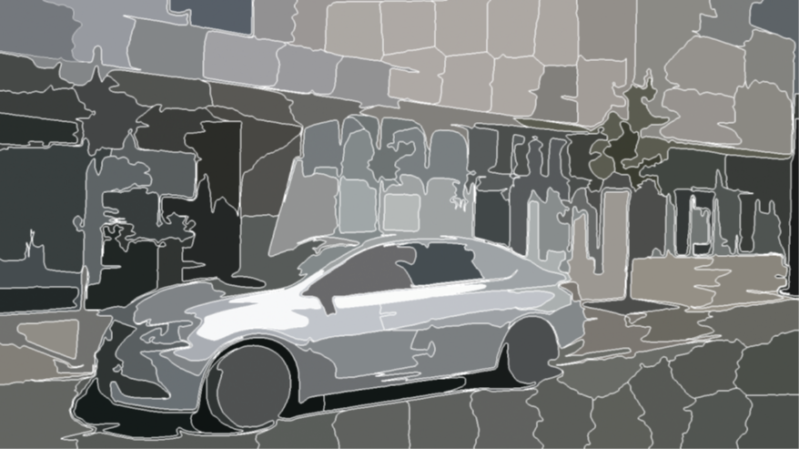
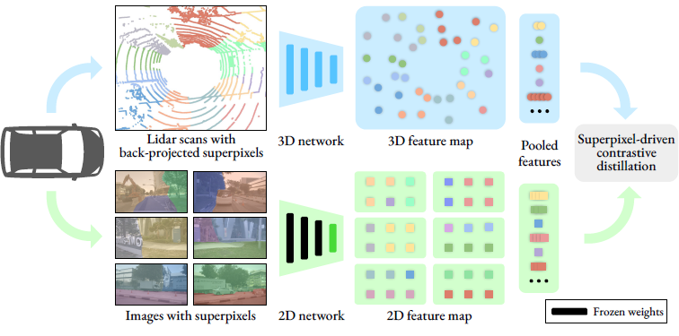
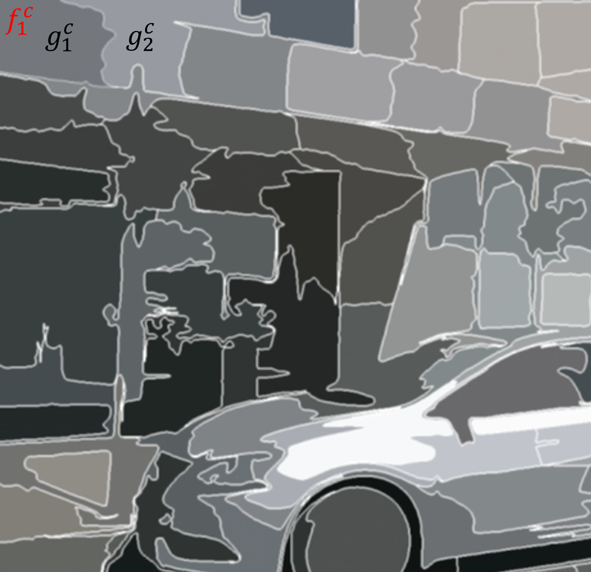

개인적인 논문해석을 포함하고 있으며, 의역 및 오역이 남발할 수 있습니다. :)
1. Introduction
이전의 deep network을 이용한 3D segmentation 및 detection 성능은 전적으로 거대한 양의 데이터셋으로부터 비롯되었다고 할 수 있습니다. 반면에, 이 3D lidar point를 레이블링하는 작업은 매우 많은 비용이 필요하죠. 이러한 맥락에서 self-supervision을 도입하게 된다면 거대한 양의 non-annotated data에 먼저 사전 학습하고, 이를 적은 양의 annotated data에 미세조정하는 방식을 사용함으로써 annotating 비용 부담을 크게 완화할 수 있을 것입니다.
본 논문에서는 대부분의 자율주행 차량들이 카메라와 lidar 센서를 함께 장착하고 있으며 이렇게 수집되는 데이터는 synchronized(time-aligned) & calibrated(카메라 렌즈로 인한 왜곡이 보정됨) 할 가능성이 높다는 점을 지적하며 다음과 같은 방법을 제시합니다.카메라로 촬영된 calibrated image에 self-supervised pre-trained image representations를 추출해내고 이를 point data에 지식 전이(distill)할 수 있다고 주장하며 그리고 이 과정을 2D-to-3D representation distillation이라 정의했습니다.
해당 방법의 구현은 superpixel이라는 개념에서 출발하는데, 논문에서 말하기로는
“we use superpixels, which group visually similar regions that are likely to belong to the same object.”
시각적으로 유사한 영역, 즉 같은 객체일 것으로 추정되는 픽셀들의 그룹화
라고 말합니다. 본문의 Fig 2.에서 그 예시를 알 수 있습니다.
 Figure 2. SLIC superpixels computed on an image from nuScenes
본 연구에서 이 superpixel을 pooling mask로써 사용한다고 말합니다. 즉, 같은 superpixel 그룹에 속한 3D points와 2D pixels feature들에 대해 contrastive loss를 적용해 두 feature가 매칭되고 pooled 될 수 있도록 하는 것입니다.

이러한 방법을 채택함에 따라 아래 두 가지 단점을 완화할 수 있다고 주장합니다.
- 카메라나 lidar 센서 중 한 가지 센서의 occlusion으로 인한 pixel 및 point의 오매칭, 미매칭 완화
- 특히 자율주행 환경과 같이 야외의 경우, 센서가 포집하지 못하는 구역도 존재할 수 있기 때문에 몇몇 point들에 대해선 데이터가 누락될 수 있겠죠.
- 하지만 superpixel 그룹 단위로 pixel과 point를 매칭하게 된다면 데이터 누락에 강건할 수 있겠습니다.
- 내가 누락되었더라도 내 옆에 누군가가 포집되었다면 그 포집된 친구를 따라갈 수 있겠죠?
- point cloud 영역 중 밀도있게 포집된(densely) 영역과 듬성듬성(sparsely) 포집된 영역 간의 contrastive loss 가중치를 균형있게 반영할 수 있음
- 자율주행 환경에서 중요한 객체는
cars,pedestrians,cyclists와 같이 드물게 포집될 수 있는 객체들인데, 이러한 객체들은 조그만 영역으로 등장할 것이므로 높은 가중치를 부여할 수 있다?? - 라는 뜻으로 해석이 됩니다.
- 자율주행 환경에서 중요한 객체는
3. Our approach
3.1. Image-to-Lidar Self-supervised Distillation
본 논문의 주요 방향은 이미 거대한 데이터에 사전학습 되어 있는 2D image representations를 바탕으로 self-supervised distillation 방법을 통해 훌륭한 3D lidar representations를 획득하는 것입니다. 따라서 첫 단계는 2D image의 촬영 시점과 3D point의 포집 시점을 정렬하는 것으로 출발합니다.
Synchronized Lidar and image data
특정 촬영 시점 $t_0$에서 수집된 데이터는 아래와 같이 두 가지입니다.
- point cloud, $\text{P} = (p_i)_{i=1,…,n} \in \mathbb{R}^{N\times3}$
- $C$개의 카메라에서 촬영된 $C$개의 이미지, $\text{I}_1, …, \text{I}_C \in \mathbb{R}^{M\times3}$
- $M$은 픽셀 수, 아마도 $H\times W$
수집된 데이터에서 카메라와 lidar 센서 간의 위치 차이는 알려져 있을 것이기 때문에 해당 정보를 사용해, $t_0$ 시점에서의 각 포인트 $p_i$에 대해 이미지 픽셀에 매핑을 수행합니다.
- 각 카메라 $c$에 대하여, $\rho_c: \mathbb{R}^3 \rightarrow \set{1,…,M} \cup \set{0}$
- 여기서 $\set{0}$은 point가 이미지 픽셀에 매칭되지 않을 때, 해당 point에 할당됩니다.
매칭의 방법은 자세하게 나타나있지 않습니다. camera calibration이나 혹은 다른 트릭에 대한 언급은 없습니다. 필자가 해당 데이터에 대해 익숙하지 않으므로, 해당 분야에 standard가 되는 변환 or 매칭의 방법이 있을 것이라 생각됩니다.
Distilling network representations
- point cloud를 $D$차원의 feature로 추출해내는 3D deep neural network
- $f_{\theta_{bck}}: \mathbb{R}^{N\times 3} \rightarrow \mathbb{R}^{N\times D}$
- self-supervised pre-trained image network
- $g_{\bar\omega_{bck}}: \mathbb{R}^{M\times 3} \rightarrow \mathbb{R}^{M^\prime \times E}$
- 이 때 image network의 parameter $\bar\omega_{bck}$는 학습하지 않습니다.
특정 포인트 집합 \(f_{\theta_{bck}}(\text{P})\)에 대해서 \(g_{\bar\omega_{bck}} (\text{I}_1), ..., g_{\bar\omega_{bck}}(\text{I}_C)\)에 대해 superpixel 영역을 기반으로 contrastive loss를 걸어 point features와 pre-trained image features의 feature aligning을 바탕으로 \(\theta_{bck}\)의 학습을 이루겠다는 것이 본 연구의 핵심입니다.
3.2. Superpixel-driven Contrastive Distillation Loss
먼저 superpixel을 어떻게 선택하게 되었는지 설명합니다. 저자들은 semantic segmentation과 object detection 같은 downstream task를 해결하고자 하고, 이를 위한 3D representation은 objects or object parts에 대한 “reason”이 필요하다고 생각했습니다. 따라서 지나치게 디테일한 픽셀 단계에선 feature간의 contrast를 계산하기 싫었고, object level에서의 contrast를 계산하고자 했습니다. 이에 적합한 정보가 superpixel이라고 생각했던 것이죠.
- ($c$ 시점에서 촬영된) 하나의 image $\text{I}_c$에 대해 $Q$개의 superpixel로 쪼갭니다.
- 이 pixel indices 집합을 $\mathcal{S}_1^c, …, \mathcal{S}_Q^c$로 정의합니다.
- 이들 집합들은 서로 원소들을 공유하지 않는 집합들이 될 것입니다.
- 이 집합들을 앞서 정의했던 3D-to-2D mapping function을 이용해 일종의 “superpoint”와 매칭합니다.
- $\mathcal{G}_1^c, …, \mathcal{G}_Q^c$, where $\mathcal{G}_s^c = \set{i: \rho_c(p_i) \in \mathcal{S}_s^c}$
- 즉, point cloud 내 각 point들에 대해 $\rho_c$ function을 적용하고 그 결과가 $\mathcal{S}_s^c$ 집합에 포함되어 있으면 $\mathcal{G}_s^c$ 집합에 할당하는 작업입니다.
저자들이 원하는 건 이 superpoint($\mathcal{G}_s^c$)가 다수의 superpixel 중 가장 유사한 superpixel(\(\mathcal{S}_s^c\))에 근접하기를 원합니다. 그 이외의 superpixel(\(\mathcal{S}_{s^\prime}^{c^\prime}\))들은 제외하고 말이죠.
때문에, 아래와 같은 방식으로 loss를 정의했습니다.
Contrastive loss.
각 카메라 $c$에 대해 superpoint 및 superpixel feature를 아래와 같이 average pooling을 통해 추출합니다. 여기서 각 $h$ layer는 superpoint와 superpixel feature 차원을 동일하게 맞추기 위해 붙인 것이 되겠죠.
\[f_s^c = \frac{1}{\left| \mathcal{G}_s^c \right|} \sum_{i\in \mathcal{G}_s^c} (h_{\theta_{head}} \circ f_{\theta_{bck}})(\text{P})_i\] \[g_s^c = \frac{1}{\left| \mathcal{S}_s^c \right|} \sum_{j\in \mathcal{S}_s^c} (h_{\omega_{head}} \circ f_{\bar\omega_{bck}})(\text{I}_c)_j\] \[h_{\theta_{head}}: \mathbb{R}^{N\times D} \rightarrow \mathbb{R}^{N \times F}\] \[h_{\omega_{head}}: \mathbb{R}^{M^\prime \times D} \rightarrow \mathbb{R}^{M \times F}\]여기서 한 superpoint feature에 대해 아래와 같이 contrastive loss를 걸어줍니다. 아래 수식에서 $g_s^c$는 가장 연관있을 것이라 여겨지는 superpixel, 반면에 $g_{s^\prime}^{c^\prime}$은 매칭된 superpixel 중 나머지 superpixel 입니다.
수식을 해석해보면 가장 유사하게 매칭되는 superpixel feature \(\mathcal{g}_s^c\)와의 contrastive는 최대한 줄이면서, 그 이외의 다른 superpixel feature들인 \(\mathcal{g}_{s^\prime}^{c^\prime}\)와의 contrastive는 최대한 벌어질 수 있도록 설계되어 있습니다. 학습이 진행될수록 superpoint feature \(f_s^c\)는 점점 \(g_s^c\)와는 근접하고 \(g_{s^\prime}^{c^\prime}\)와는 멀어질 겁니다.
\[\mathcal{L}(\theta_{bck}, \theta_{head}, \omega_{head}) = - \sum_{c,s} \log \left[ \frac{\exp{(\left< f_s^c, g_s^c \right> / \tau)}}{\sum_{c^\prime, s^\prime} \exp{(\left< f_s^c, g_{s^\prime}^{c^\prime} \right> / \tau)}} \right]\]where $\left< \cdot, \cdot \right>$ denotes the scalar product in $\mathbb{R}^F$
Discussion
- Pre-training을 수행함에 있어 superpoint-superpixel level에서의 loss를 계산함의 효용성
- 저자들은 절대 한 superpixel이 서로 다른 두 객체를 포함하고 있지 않기 때문에 loss를 계산함에 있어 일관적이고 바람직한 point features만을 다룰 것
- 포집되는 point cloud의 밀도에 따라 달라질 수 있는 loss 가중치의 균형
- 일반적으로 포집되는 point cloud는 그 point들의 밀집도가 다름
- superpixel 단위로 loss를 계산함에 따라 자연스럽게 high or low density에 관계없이 동등한 가중치로써 각각 객체들에 대한 loss를 계산할 수 있을 것임
- 카메라와 lidar 센서 간의 위치 오차는 0이 될 수 없음
- 따라서 센서 위치 오차를 보정하는 과정이 필수적인데, 이 과정에서 point-pixel 매칭 오차 역시 발생할 수 있음. 특히 occlusion 및 motion과 같은 노이즈까지 고려하면서 오차 보정은 어려움
- superpixel 및 superpoint 단위로 average pooling을 수행함으로써 잘못된 매칭의 영향을 완화할 수 있을 것으로 기대
4. Experiments
… 중략 …
4.6. Technical Limitations
- 저조도 환경에서 object segment 어려움에 따른 성능 저하
- 두 superpixel feature가 유사한 경우에도 모델 설계상 target superpoint feature에 가장 유사한 단 하나의 superpixel feature에만 가까울 수 있도록 학습을 강요함
- 해당 단점은 superpixel feature extractor의 가중치를 고정해놓는 본 연구의 설계 특성상 더 치명적임
- 향후 연구에서 보완해야할 지점
한계점 2에 대해서 더 생각해보겠습니다. 아래 그림과 같이 superpixel이 주어졌습니다. 엄밀히 말하면 $f_1^c$는 point cloud 상의 superpoint를 의미하는데, 여기에선 편의상 superpixel 이미지 위에 표현했습니다.

superpoint $f_1^c$에 대한 representation을 학습함에 있어 가장 유사한 superpixel이 $g_1^c$, 그 두 번째로 유사한 superpixel이 $g_2^c$라고 하겠습니다. 이 때, 충분히 $g_1^c$와 $g_2^c$는 충분히 유사해 보이기 때문에 같은 클래스로 보아도 무방하죠. $g_1^c$와 $g_2^c$를 모두 loss 식의 분자로 올려서 가깝게 하도록 학습을 진행하고 싶지만, 현재 모델의 구조상 단 하나의 superpixel 밖에 분자로 올라갈 특권을 얻게 됩니다. 따라서 가장 유사한 $g_1^c$만이 분자로 올라가 $f_1^c$와 가까워질 기회를 얻게됩니다. 저자들은 이 점을 한계점으로 지적했고, 이를 향후 연구과제로 언급하고 있습니다.
Comments powered by Disqus.